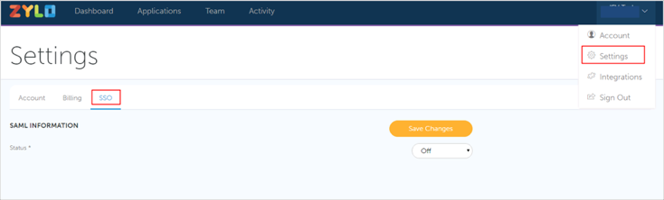

Login to your Zylo account as an administrator.
Navigate to Settings > SSO.

In Status, select Okta, then enter the following information (see screen shot at end of step for reference):
SAML SSO URL: Copy and paste the following:
Sign into the Okta Admin Dashboard to generate this variable.
Identity Provider Issuer: Copy and paste the following:
Sign into the Okta Admin Dashboard to generate this variable.Public Certificate: Copy and paste the following (in PEM text format):
Sign into the Okta Admin Dashboard to generate this variable.
Click Save Changes.
Done!
Notes:
IDP-initiated flows are supported.SP-initiated flows and Just In Time (JIT) provisioning are not supported.